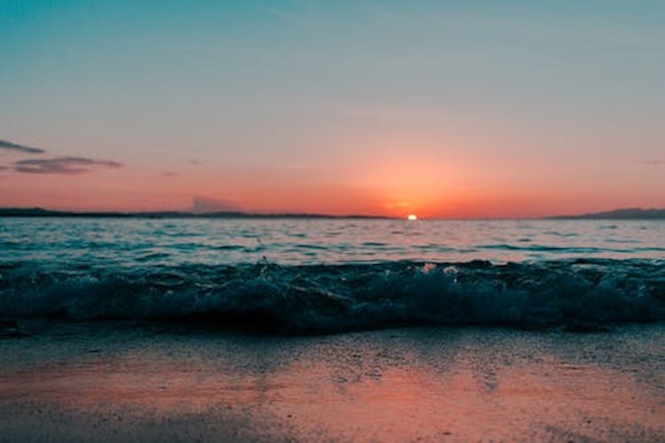

Another thing Augglandia is known for are their beachs. Augglandia has some of the best beaches in North America. The beaches get over 1,500,000 visiters every year. 95% are tourists, the other 5% are locals.

By the beach there are many different thing you can do. The boardwalk offers: ice cream, games, a ferris wheel, a rollercoaster and so much more.